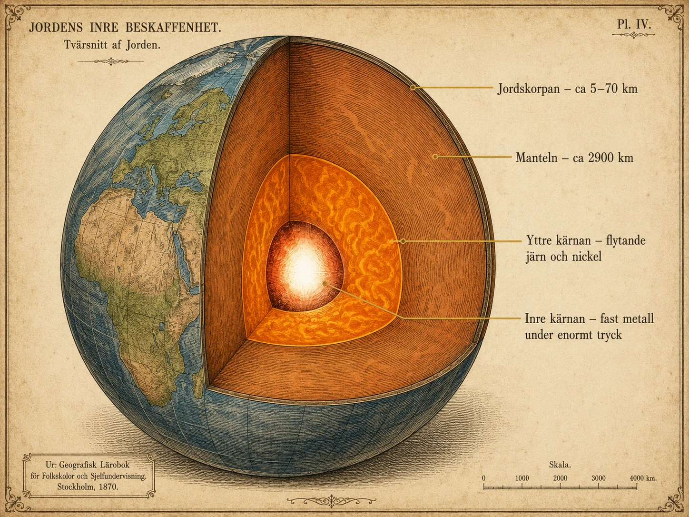
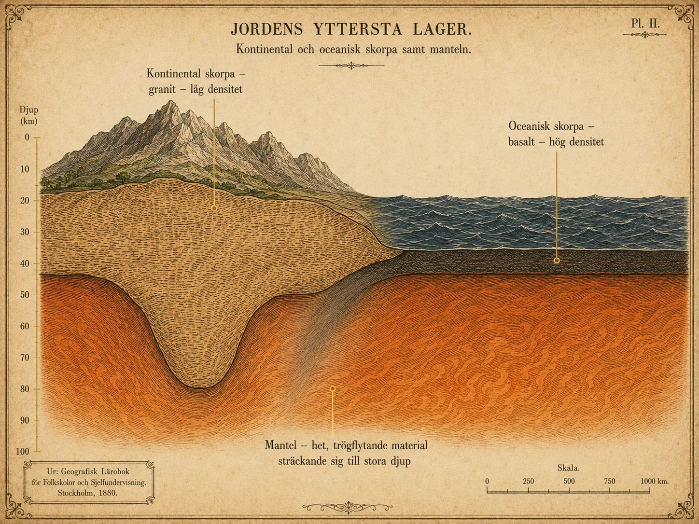
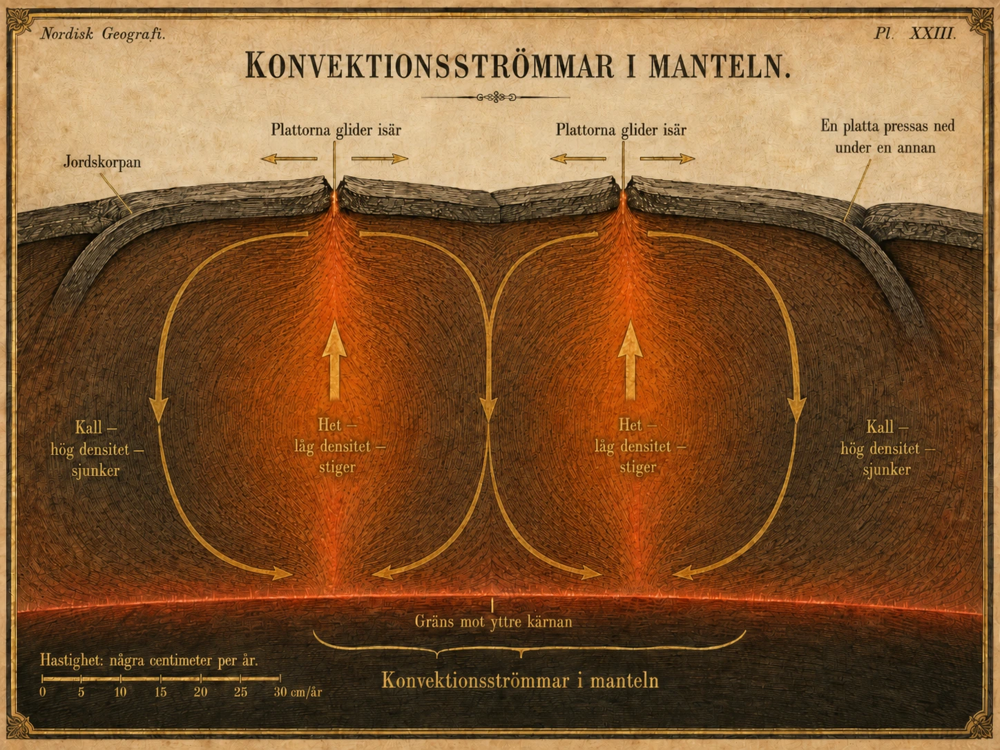
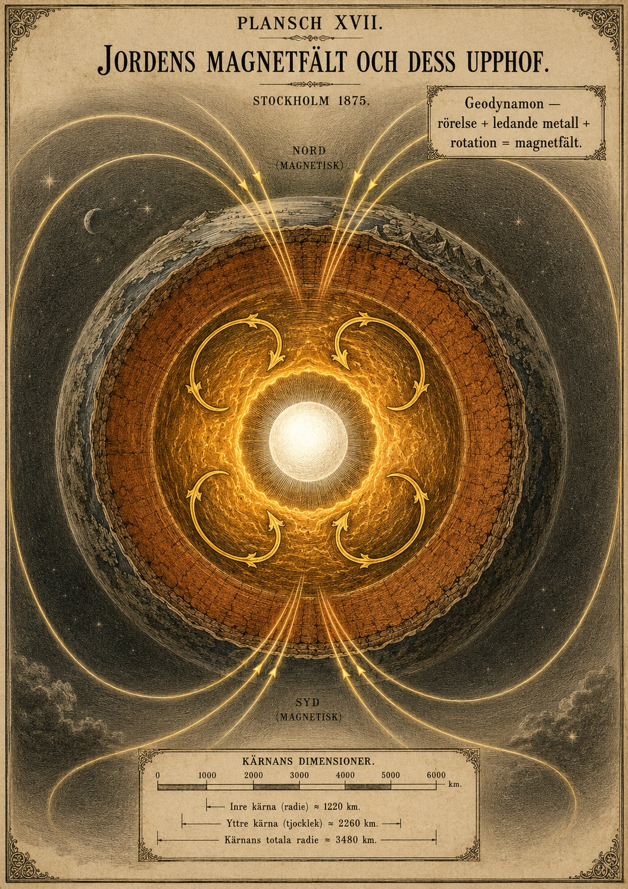
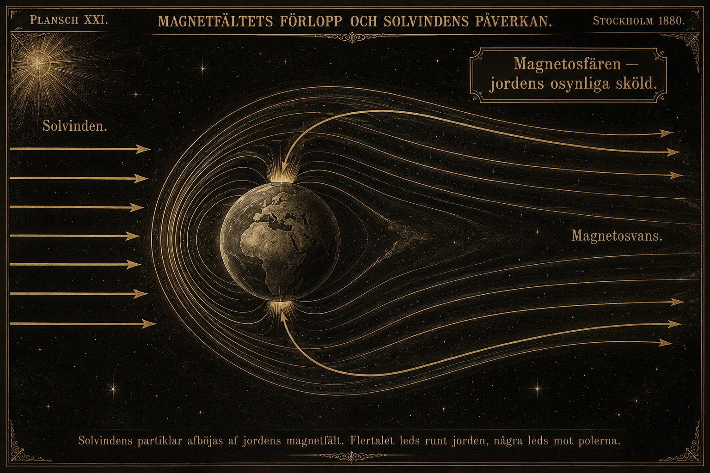
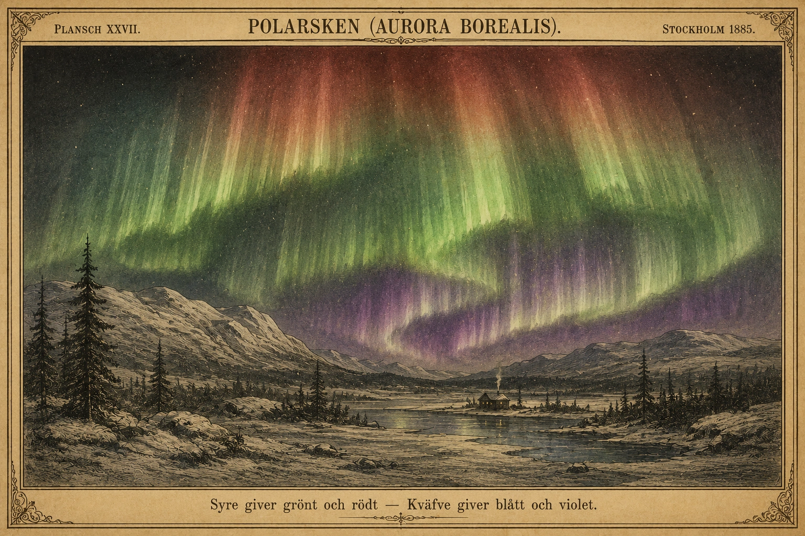

Jordens uppbyggnad
— Två blickar på det fasta som ändå inte är fast —
Ett klot uppbyggt i skikt
Jorden ser fast och stilla ut när vi står på marken. Men under våra fötter finns ett klot som är uppbyggt i flera olika skikt. Vissa delar är fasta, andra är delvis smälta eller flytande. Det är värmen inuti jorden som långsamt förändrar dess yta — berg bildas, havsbottnar spricker upp, vulkaner får utbrott och jordbävningar skakar marken. För att förstå allt detta behöver man först förstå hur jordklotet är uppbyggt.
Innan vi går igenom skikten behöver vi ett begrepp som kommer dyka upp gång på gång i geologin: densitet. Densitet beskriver hur tätt packad materia är — alltså hur mycket den väger jämfört med hur stor plats den tar. Två stenar av samma storlek kan väga väldigt olika. Den som väger mer har högre densitet. När jorden för fyra och en halv miljard år sedan var en glödhet boll av smält material sjönk de tyngsta ämnena, framför allt järn och nickel, in mot mitten. De lättare ämnena hamnade utanför. Det är därför jordens skikt ser ut som de gör i dag — densiteten avgjorde var allting hamnade.
Jordklotets fyra skikt
Jordklotet brukar delas in i fyra huvuddelar: jordskorpan, manteln, yttre kärnan och inre kärnan. Längst ut ligger jordskorpan, det tunna fasta skal vi lever på. Jämfört med hela jordklotet är skorpan otroligt tunn. Om jorden vore ett äpple skulle skorpan ungefär motsvara skalet.
Under skorpan finns manteln. Manteln är mycket tjockare och består av het bergmassa. Den är inte flytande som vatten, men den kan långsamt röra sig om man väntar tillräckligt länge. Man kan tänka sig manteln som mycket seg sirap eller varm plast: den känns fast på kort tid, men under miljontals år förflyttar den sig.
Längre in finns yttre kärnan. Den består framför allt av järn och nickel och är flytande, alltså i ett vätsketillstånd. Det är rörelser i den yttre kärnan som skapar jordens magnetfält — något vi går djupare in i nästa avsnitt.
Allra längst in ligger inre kärnan. Den består också mest av järn och nickel, men är fast. Det kan kännas konstigt: temperaturen där inne är ungefär lika hög som på solens yta, så hur kan något vara fast? Svaret är trycket. Vikten från alla skikt ovanför pressar ihop materialet i mitten så hårt att atomerna inte kan röra sig fritt. Trycket vinner över värmen, och kärnan hålls fast.

Jordskorpan — det tunna skal vi lever på
Jordskorpan är inte lika tjock överallt. Det finns två huvudtyper, och skillnaden mellan dem är viktig för att förstå varför vissa platser har vulkaner, bergskedjor och jordbävningar — och andra inte.
Den kontinentala jordskorpan finns under landområdena. Den är tjock men relativt lätt, ungefär 30–70 kilometer djup. Under stora bergskedjor som Himalaya eller Anderna är den extra tjock — bergen sticker både upp ovanför havsytan och har en "rot" ner i manteln, ungefär som ett isberg. Den kontinentala skorpan består framför allt av granit och liknande bergarter, som har relativt låg densitet.
Den oceaniska jordskorpan finns under haven. Den är tunn men tung — bara 5–10 kilometer tjock, men med betydligt högre densitet än den kontinentala. Den består till stor del av basalt, en mörk vulkanisk bergart som är tyngre per kubikmeter än granit.
Densitetsskillnaden får dramatiska följder. När en oceanisk platta möter en kontinental, dyker den oceaniska under — den är helt enkelt tyngre och sjunker. Det är på sådana platser vi får djuphavsgravar, vulkaner och kraftiga jordbävningar. Vi återkommer till detta i avsnittet om plattektonik. För nu räcker det att veta att jordskorpan inte är ett enda helt skal. Den är uppsprucken i stora delar — tektoniska plattor — som tillsammans bygger upp jordens yttersta lager.

Konvektionsströmmar — drivkraften under fötterna
Vad är det egentligen som får jordskorpan att röra sig? Svaret finns i manteln, och hänger ihop med densitet och värme.
Inuti jorden finns enorma mängder värme. En del finns kvar ända sedan jorden bildades, då hela klotet var smält. En del kommer från radioaktiva ämnen i jordens inre som långsamt sönderfaller och avger värme. Tillsammans gör detta att manteln är extremt het — närmare 3500 grader nära kärnan.
Värme och densitet hänger ihop. När material värms upp utvidgas det och får lägre densitet. När det kyls av drar det ihop sig och får högre densitet. Detta är samma princip som får en varmluftsballong att stiga: den varma luften inuti har lägre densitet än den kalla luften runt om, så ballongen lyfter.
I manteln händer något liknande. När bergmassan nära kärnan värms upp får den lägre densitet och stiger långsamt uppåt. När den närmar sig jordskorpan kyls den av, får högre densitet och sjunker tillbaka nedåt. Resultatet blir stora cirkulerande rörelser i manteln. Dessa kallas konvektionsströmmar.
Man kan jämföra det med vatten i en kastrull på spisen. När man värmer underifrån stiger det varma vattnet i mitten upp till ytan, sprider sig åt sidorna, kyls av, sjunker längs kastrullens kanter och värms upp igen i botten. I manteln går rörelsen mycket långsammare — vi pratar centimeter per år, inte sekunder — men principen är densamma.
Och här kommer den viktiga kopplingen till jordskorpan: konvektionsströmmarna drar med sig plattorna ovanför. När het bergmassa stiger upp under en plats kan den dela plattorna i två och skapa en ny havsbotten. När materia sjunker ner på en annan plats kan den dra med sig en platta nedåt, så att den glider in under en granne. Det är denna långsamma, oavbrutna rörelse som forma jordens kontinenter, hav och bergskedjor över årmiljoner.

Jordklotets uppbyggnad
Jorden ser fast och stilla ut. Men jorden är inte likadan rakt igenom. Den är uppbyggd av flera olika lager. Dessa lager kallas skikt.
Det är värmen inuti jorden som långsamt förändrar ytan. Berg bildas. Vulkaner får utbrott. Jordbävningar skakar marken.
Vi behöver också ett ord till: densitet. Densitet betyder hur tungt något är jämfört med hur stort det är. Två lika stora stenar kan väga olika mycket. Den som väger mer har högre densitet. Den som väger mindre har lägre densitet.
Jordens olika skikt
- Jorden består av fyra skikt: jordskorpan, manteln, yttre kärnan, inre kärnan
- Jordskorpan är ytterst och mycket tunn — som äpplets skal
- Manteln är het bergmassa som rör sig mycket långsamt
- Yttre kärnan är flytande järn och nickel
- Inre kärnan är fast — för trycket pressar ihop materialet
Jordklotet brukar delas in i fyra delar.
Den yttersta delen kallas jordskorpan. Det är det tunna, fasta skal som vi lever på. Jordskorpan är mycket tunn om man jämför med hela jordklotet. Om jorden var ett äpple skulle jordskorpan vara som äpplets skal.
Under jordskorpan finns manteln. Manteln är mycket tjockare än jordskorpan. Den består av mycket het bergmassa. Manteln är inte flytande som vatten. Men den kan röra sig mycket långsamt.
Längre in finns yttre kärnan. Den består mest av järn och nickel. Den yttre kärnan är flytande. Rörelser i den yttre kärnan hjälper till att skapa jordens magnetfält. Vi går djupare in på det i nästa avsnitt.
Allra längst in finns inre kärnan. Den består också mest av järn och nickel. Men den inre kärnan är fast. Det är konstigt. Inre kärnan är jordens hetaste plats. Hur kan något så hett vara fast?
Svaret är trycket. Vikten av alla skikt ovanför pressar ihop materialet i mitten. Trycket är så stort att atomerna inte kan röra sig. Trycket vinner över värmen.
Bilden visar jorden i genomskärning. Lägg märke till:
- Jordskorpan är så tunn att den nästan inte syns
- Manteln är det stora orangefärgade skiktet — den allra största delen av jorden
- Yttre kärnan är gulglödande — det är där metallen är flytande
- Inre kärnan är den vita bollen längst in — fast metall
Fundera: Varför är jordskorpan så liten på bilden?
Jordskorpan
- Det finns två sorters jordskorpa: kontinental och oceanisk
- Kontinental skorpa finns under land — tjock men låg densitet (lätt)
- Oceanisk skorpa finns under hav — tunn men hög densitet (tung)
- Skorpan är uppdelad i stora bitar som kallas plattor
Jordskorpan är jordens yttersta lager. Det är där vi människor, djur och växter lever. Jordskorpan består av bergarter och mineraler.
Jordskorpan är inte lika tjock överallt. Den är tjockare under land och tunnare under hav.
Det finns två typer av jordskorpa. Den ena kallas kontinental jordskorpa. Den finns under landområdena. Den är ofta tjock — 30 till 70 kilometer. Men den är samtidigt lätt. Det betyder att den har låg densitet. Den består mest av en bergart som heter granit.
Den andra kallas oceanisk jordskorpa. Den finns under haven. Den är tunnare — bara 5 till 10 kilometer. Men den är tyngre per kubikmeter. Den har alltså hög densitet. Den består av en mörk bergart som kallas basalt.
Eftersom den oceaniska jordskorpan är tyngre kan den pressas ner under en annan platta. Då bildas vulkaner och jordbävningar. Mer om det i avsnittet om plattektonik.
Jordskorpan är uppdelad i plattor
Jordskorpan är inte ett helt skal. Den är uppdelad i stora bitar. Dessa bitar kallas tektoniska plattor.
Plattorna rör sig mycket långsamt. De rör sig bara några centimeter per år. Det är ungefär lika långsamt som naglar växer.
Även om rörelsen är långsam kan den förändra jorden mycket under lång tid. Under miljontals år kan kontinenter flytta sig, hav växa och bergskedjor bildas.
Bilden visar de två sorterna av jordskorpa bredvid varandra. Lägg märke till:
- Den kontinentala skorpan (till vänster) är mycket tjockare
- Den oceaniska skorpan (till höger) är tunn men mörkare — den har högre densitet
- Bergskedjor har en rot nedåt — som ett isberg
Fundera: Vilken sorts skorpa lever du på?
Konvektionsströmmar i manteln
- Manteln är het — närmare 3500 grader djupare ner
- Varmt material har låg densitet — det stiger
- Kallt material har hög densitet — det sjunker
- Det skapar cirkulerande rörelser i manteln — konvektionsströmmar
- Konvektionsströmmarna drar med sig plattorna på ytan
Inne i jorden finns mycket värme. En del finns kvar sedan jorden bildades. En del kommer från radioaktiva ämnen som långsamt sönderfaller. Värmen gör att material i manteln rör sig långsamt.
Värme och densitet hänger ihop. När het bergmassa värms upp blir den lite lättare. Den får lägre densitet. Då stiger den uppåt. När bergmassan kommer närmare jordskorpan kyls den av. Då blir den tyngre. Den får högre densitet. Då sjunker den ner igen.
Denna långsamma cirkulerande rörelse kallas konvektionsström. Den rör sig bara några centimeter per år.
Man kan jämföra med vatten i en kastrull. När vatten värms underifrån stiger varmt vatten uppåt. Kallare vatten sjunker neråt. I manteln sker detta mycket långsammare. Men principen är ungefär densamma.
Konvektionsströmmarna drar med sig plattorna ovanför. Där het materia stiger upp dras plattorna isär. Där kall materia sjunker pressas plattorna ihop. Det är därför jordytan ständigt förändras.
Bilden visar manteln i genomskärning. Lägg märke till:
- Pilarna i mitten pekar uppåt — där stiger het materia (låg densitet)
- Pilarna vid sidorna pekar nedåt — där sjunker kall materia (hög densitet)
- Ovanpå syns plattorna — där materia stiger dras de isär, där materia sjunker pressas de ihop
- Rörelsen är som en stor cirkel — men otroligt långsam
Fundera: Om manteln rör sig några centimeter per år, hur mycket är det på 100 miljoner år?
Hur vet vi hur jordens inre ser ut?
Det djupaste hål människan någonsin borrat är Kolahalvöns djupborrhål i Ryssland. Det nådde drygt 12 kilometer ner i jordskorpan innan borren fastnade i 1989. Tolv kilometer — och vi pratar om en jord vars radie är 6 371 kilometer. Vi har alltså inte ens skrapat på skalets undersida. Hur kan vi då veta att det finns en flytande yttre kärna, en fast inre kärna, och en seg-flytande mantel? Vi har aldrig sett dem.
Svaret heter seismologi — läran om hur vågor rör sig genom jorden. När det sker en jordbävning skickas energi ut i form av seismiska vågor som färdas genom hela klotet och registreras av instrument på andra sidan jorden. Vågorna är jordens röntgenstrålar.
Två huvudtyper av vågor avslöjar jordens inre. P-vågor (primärvågor) är tryckvågor som kan färdas genom både fast och flytande material. S-vågor (sekundärvågor) är skjuvvågor som däremot bara kan färdas genom fast material — de stoppas helt av vätska. Detta är nyckeln. Genom att mäta var P-vågor kommer fram, var S-vågor inte kommer fram, och hur fort de färdas, kan vi rita en karta över vad jordens inre består av.
År 1909 upptäckte den kroatiske seismologen Andrija Mohorovičić att vågorna ändrar hastighet plötsligt på ett visst djup. Det gränssnittet markerar övergången från jordskorpan till manteln och kallas i dag Moho-diskontinuiteten. År 1936 visade danska Inge Lehmann att S-vågor stoppas av yttre kärnan men att P-vågor svagt återkommer ännu längre in — alltså måste det finnas en fast inre kärna inuti den flytande yttre. Hon hade rätt. Den modell vi använder i dag bygger fortfarande till stor del på dessa upptäckter.
Det är värt att stanna vid: hela vår förståelse av jordens inre kommer från att lyssna noggrant på hur det skakar.
Hetspots och mantelpluemar
Konvektionsströmmarna förklarar mycket av det som händer i jordskorpan, men inte allt. Det finns platser på jorden där vulkaner ligger där de inte borde — mitt på en platta, långt från någon plattgräns. Hawaii är det klassiska exemplet. Ön ligger mitt i Stilla havet, mitt på Stillahavsplattan, och borde geologiskt sett vara stum. Ändå är den en av jordens mest aktiva vulkaner. Hur går det ihop?
Förklaringen är något som kallas mantelpluemar. Det är ovanligt heta pelare av bergmassa som stiger upp från djupt nere i manteln — kanske ända från gränsen mot kärnan — rakt upp mot jordskorpan. När en sådan pluem når skorpan smälter den genom den och skapar en vulkan på ytan. Platsen där detta sker kallas en hetspot.
Det fascinerande är att hetspotten i sig är ungefär stillastående — den sitter fast i sitt djupa ursprung — medan plattan ovanför långsamt rör sig. Detta lämnar spår i landskapet. Hawaii är inte en ö utan en kedja av öar och undervattensberg som sträcker sig flera tusen kilometer åt nordväst. Den äldsta ön är redan slipad ner till en undervattens-plattform långt bort, den nyaste — Big Island — ligger rakt över hetspotten just nu. Den nästa, "Loihi", växer redan under havsytan sydöst om Big Island och kommer dyka upp om ungefär 100 000 år.
Hetspots ger oss alltså två saker. För det första visar de att konvektion i manteln inte bara är en jämn cirkulation utan kan ha lokala koncentrerade pelare av extra het materia. För det andra fungerar hetspots som naturliga klockor — eftersom plattorna rör sig över dem ger spåren av tidigare vulkaner oss ett mått på hur snabbt plattorna rör sig och i vilken riktning. Vad som ser ut som vulkanöar är samtidigt geologiska tidsmätare.
Jorden som magnet
I förra avsnittet såg vi att jorden är uppbyggd i fyra skikt och att den innersta delen — kärnan — består av järn och nickel. Det är inte en kuriositet. Just dessa två metaller, kombinerat med den rörelse som finns i jordens inre, är det som gör vår planet bebolig. Utan kärnan skulle jorden vara en exponerad stenkula i rymden. Med kärnan har vi ett osynligt skydd som sträcker sig långt utanför atmosfären och som hindrar farlig strålning från att nå oss. Det skyddet kallas jordens magnetfält. I detta avsnitt tittar vi på hur det skapas, vad det gör för oss, och varför det dessutom ger oss ett av naturens vackraste fenomen: polarsken.
Hur kärnan skapar magnetfältet
För att förstå magnetfältet måste vi börja djupt nere i jorden. Kärnan delas i två delar. Inre kärnan är fast, trots att den är jordens hetaste plats — trycket håller atomerna på plats. Yttre kärnan är flytande. Den består också av järn och nickel, men där är trycket lägre och värmen vinner. Metallen är i ett vätsketillstånd och kan röra sig. Det är denna rörelse som är hela hemligheten bakom magnetfältet.
Tre saker måste samverka för att ett magnetfält ska uppstå. Det första är att kärnan består av metall. Järn och nickel leder elektricitet, vilket är en grundförutsättning. Det andra är att metallen rör sig. Värmen från inre kärnan driver konvektionsströmmar i den yttre kärnan — varmare flytande metall stiger uppåt, kallare sjunker nedåt, precis som i manteln men i mycket större tempo. Det tredje är att jorden roterar. Rotationen vrider rörelserna till mer ordnade mönster. När en ledande vätska rör sig under påverkan av rotation skapas elektriska strömmar. Och elektriska strömmar skapar magnetfält. Det är samma princip som i en elektrisk generator — fast i naturlig skala. Geologer kallar det därför ofta för jordens geodynamo.
Resultatet är ett magnetfält som omger hela planeten. Det syns inte, det märks knappt — men det sträcker sig tusentals kilometer ut i rymden och håller jorden inkapslad i en osynlig bubbla.

Magnetfältet som sköld
Solen skickar hela tiden ut en ström av små partiklar — elektroner, protoner och andra laddade partiklar — som färdas i hög hastighet genom rymden. Denna ström kallas solvinden. Den är ständig och konstant. Den är inte synlig, men den är farlig. Utan skydd skulle solvindens partiklar tränga in i atmosfären och bryta ner den över tid. De skulle också skada levande celler. Vi skulle inte kunna leva på en jord utan magnetfält.
Magnetfältet fungerar som en sköld. När de laddade partiklarna närmar sig jorden böjer fältet av deras bana. Många av dem styrs runt jorden och fortsätter ut i rymden. De träffar aldrig atmosfären. Andra leds längs magnetfältslinjerna mot polerna — och det är just där polarsken uppstår, vilket vi snart kommer till.
Bilden av en bubbla är inte helt fel, men en mer precis bild är en form som liknar en droppe. På den sida av jorden som vänds mot solen pressas magnetfältet samman av solvinden. På nattsidan dras det ut i en lång svans bakåt, miljoner kilometer ut i rymden. Hela strukturen kallas magnetosfären.
Ibland blir solen extra aktiv. Då skickas större mängder partiklar ut på en gång, ibland med flera dagars förvarning från observatorier. Det är en solstorm. När en solstorm träffar jordens magnetfält kan fältet kortsiktigt skakas och störas. Polarsken blir starkare och kan synas längre söderut än vanligt. Men kraftigare solstormar har också baksidor: de kan slå ut satelliter, störa GPS-signaler, slå ut radiokommunikation och i sällsynta fall få elnät att kollapsa. I mars 1989 orsakade en kraftig solstorm ett strömavbrott i hela Quebec som varade i nio timmar. Magnetfältet är alltså inte bara biologiskt skydd. Det är också tyst infrastruktur som vårt moderna samhälle vilar på.

Polarsken — när himlen lyser
De partiklar som inte böjs förbi jorden, utan i stället leds längs magnetfältslinjerna mot polerna, är de som skapar polarsken. På norra halvklotet kallas fenomenet norrsken, på södra halvklotet sydsken. Båda är samma sak, bara på var sin sida av planeten.
När partiklarna närmar sig jorden krockar de högt uppe i atmosfären med atomer av syre och kväve. Krocken överför energi från partikeln till gas-atomen. Atomen blir kortvarigt energiladdad. Men den behåller inte energin — efter en bråkdels sekund släpper den ut energin igen, denna gång i form av synligt ljus. Det är detta ljus vi ser som polarsken. Hur exakt detta går till på atomnivå tar vi upp i djupdykningen längst ner.
Färgen beror på vilken gas som träffats och på vilken höjd det sker. Grön är vanligast och kommer från syre på cirka 100–200 kilometers höjd. Rött kommer också från syre, men på betydligt högre höjd — uppåt 300 kilometer. Blått och lila kommer från kväve på lägre höjd. Vid en stark polarsken kan flera färger synas samtidigt, ibland i tydliga band ovanpå varandra. Eftersom det är gaser i jordens atmosfär som lyser — inte solen som skickat färgat ljus — är polarsken något jorden skapar själv, drivet av energin från solvinden.
Att polarsken är så koncentrerat till områdena nära polerna beror på magnetfältets form. Fältlinjerna går rakt ut från polerna och leder partiklarna dit. Det är därför norrsken är vanligast i norra Sverige, Norge, Finland, Island, norra Kanada och Alaska. Vid mycket starka solstormar kan polarsken sträcka sig mycket längre söderut än vanligt — det har dokumenterats över hela Sverige, och i extrema fall ner mot Medelhavet.
Hela orsakskedjan kan sammanfattas så här: jordens flytande yttre kärna skapar magnetfältet. Magnetfältet skyddar jorden från solvindens partiklar. De partiklar som ändå leds in mot polerna kolliderar med gas i atmosfären. Gasen lyser. Vi får polarsken. Tre nivåer — kärnan, magnetfältet, atmosfären — bundna ihop i ett enda fenomen.

Jorden som magnet
I förra avsnittet lärde vi oss om jordens fyra skikt. Vi vet nu att kärnan består av järn och nickel. Just det är viktigt. Det är kärnan som gör att jorden har ett magnetfält.
Magnetfältet är ett osynligt skydd runt jorden. Det skyddar oss från farlig strålning från solen. Utan magnetfältet skulle livet på jorden inte kunna finnas på samma sätt.
I detta avsnitt ska vi titta på tre saker. Hur magnetfältet skapas. Vad det gör för oss. Och varför det ger oss polarsken.
Hur kärnan skapar magnetfältet
- Yttre kärnan är flytande järn och nickel
- Den flytande metallen rör sig hela tiden
- Jorden roterar runt sin egen axel
- Tillsammans skapar detta jordens magnetfält
- Detta kallas också jordens geodynamo
Vi måste börja djupt nere i jorden. Kärnan består av två delar. Inre kärnan är fast. Yttre kärnan är flytande.
Yttre kärnan består av metallerna järn och nickel. Där är det så hett att metallen är i flytande form. Det är denna flytande metall som skapar magnetfältet.
Tre saker måste finnas för att ett magnetfält ska uppstå.
Den första saken är metall. Järn och nickel leder elektricitet. Det är grunden.
Den andra saken är rörelse. Värmen från inre kärnan får den flytande metallen att röra sig. Varm metall stiger uppåt. Kall metall sjunker neråt. Det är samma princip som i manteln. Bara mycket snabbare.
Den tredje saken är att jorden roterar. Rotationen vrider rörelserna till mer ordnade mönster.
När en metall som leder elektricitet rör sig på detta sätt skapas elektriska strömmar. Och elektriska strömmar skapar magnetfält. Det är så enkelt — och så komplicerat. Detta kallas jordens geodynamo.
Magnetfältet sträcker sig långt ut i rymden. Det syns inte. Men det är där hela tiden.
Bilden visar jordens yttre kärna. Lägg märke till:
- I mitten finns inre kärnan — fast metall
- Runt den syns yttre kärnan — flytande metall som rör sig
- Pilarna visar hur metallen cirkulerar — varm stiger, kall sjunker
- De gula linjerna är magnetfältet som strålar ut från kärnan
Fundera: Vad skulle hända om yttre kärnan inte var flytande?
Magnetfältet som sköld
- Solen skickar hela tiden ut laddade partiklar — solvinden
- Solvinden är farlig för atmosfär, liv och teknik
- Magnetfältet böjer av partiklarna så de inte träffar jorden
- Vid solstormar är solen extra aktiv och skickar ut mer partiklar
- Magnetfältet skyddar både liv och teknik (satelliter, GPS, elnät)
Solen skickar hela tiden ut små partiklar. De är laddade och färdas mycket snabbt genom rymden. Denna ström kallas solvinden.
Solvinden är inte synlig. Men den är farlig. Utan skydd skulle den skada atmosfären. Den skulle också skada levande celler.
Magnetfältet fungerar som en sköld. När partiklarna närmar sig jorden böjer magnetfältet av deras bana. De flesta partiklarna styrs runt jorden och fortsätter ut i rymden. Vissa partiklar leds i stället mot polerna. Mer om dem snart.
Magnetfältet har en speciell form. På den sida som vänds mot solen är det ihoptryckt. På nattsidan dras det ut i en lång svans bakåt. Hela formen kallas magnetosfären.
Ibland är solen extra aktiv. Då skickar den ut mycket fler partiklar än vanligt. Det kallas en solstorm. När en solstorm träffar jorden blir polarsken kraftigare och syns längre söderut än vanligt.
Men solstormar har också baksidor. De kan störa satelliter. De kan slå ut GPS. De kan göra så att radio inte fungerar. I sällsynta fall kan elnät kollapsa. År 1989 orsakade en stor solstorm strömavbrott i hela Quebec i Kanada.
Magnetfältet skyddar alltså inte bara livet på jorden. Det skyddar också den teknik som vi bygger samhället på.
Bilden visar jorden och hur magnetfältet skyddar oss. Lägg märke till:
- Solvinden kommer från vänster — pilar visar partiklarna
- Magnetfältet pressas ihop på solsidan
- På nattsidan dras fältet ut i en lång svans
- De flesta partiklar böjs av runt jorden
- Några leds mot polerna — där bildas polarsken
Fundera: Hur ser magnetfältet annorlunda ut på dagsidan jämfört med nattsidan?
Polarsken
- Vissa partiklar leds av magnetfältet mot polerna
- Där krockar de med syre och kväve i atmosfären
- Krocken får gasatomerna att lysa
- Färgen beror på vilken gas och på vilken höjd
- Grön är vanligast — kommer från syre
Vi har sett att de flesta partiklar från solvinden böjs av runt jorden. Men inte alla. Vissa leds av magnetfältet rakt mot polerna.
På norra halvklotet kallas fenomenet norrsken. På södra halvklotet kallas det sydsken. Det är samma sak — bara på var sin sida av jorden.
När partiklarna kommer ner i atmosfären krockar de med gas-atomer. Atmosfären består mest av två gaser: syre och kväve. När en partikel från solvinden krockar med en gas-atom överförs energi till atomen. Atomen blir kortvarigt energiladdad. Sedan släpper den ut energin igen som ljus. Det är detta ljus vi ser som polarsken.
Hur det går till exakt på atomnivå går vi in på i en djupdykning längst ner.
Färgen på polarskenet beror på vilken gas det är och på vilken höjd det sker.
- Grönt ljus kommer från syre på 100–200 kilometers höjd. Det är vanligast.
- Rött ljus kommer också från syre, men högre upp — uppåt 300 kilometer.
- Blått och lila kommer från kväve på lägre höjd.
Färgerna kommer alltså inte från solen. Det är gaser i jordens atmosfär som lyser. Polarsken är något jorden skapar själv.
Polarsken syns oftast nära polerna. Det beror på magnetfältets form. Fältlinjerna går rakt ut från polerna och leder partiklarna dit. Det är därför norrsken är vanligast i norra Sverige, Norge, Finland, Island och Alaska.
Vid mycket starka solstormar kan polarsken synas mycket längre söderut än vanligt. Det har hänt över hela Sverige flera gånger. Vid extremt stora solstormar har polarsken setts ända ner mot Medelhavet.
Sambandet — från kärnan till himlen
Kärnan, magnetfältet och polarsken hänger ihop. Här är hela kedjan:
- Yttre kärnan har flytande metall som rör sig
- Det skapar elektriska strömmar
- De skapar jordens magnetfält
- Magnetfältet skyddar jorden från solvinden
- Några partiklar leds ändå mot polerna
- Där krockar de med gas i atmosfären
- Gasen börjar lysa
- Vi ser polarsken
Hela vägen, från jordens innersta kärna till ljuset på nordhimlen, är samma fenomen.
Bilden visar polarsken över ett arktiskt landskap. Lägg märke till:
- De gröna slöjorna kommer från syre på vanlig höjd
- De lila tonerna kommer från kväve lägre ner
- Ljuset har mjuka kanter — det är gas som lyser, inte hårda former
- Bakgrunden visar var partiklarna kommer in — nära polen
Fundera: Om du står under polarsken — vad är det egentligen som händer ovanför dig?
Magnetiska polskiften — när nord blir syd
Vi tänker på jordens magnetfält som något stabilt. Kompassen pekar mot nord, alltid. Norrskenet finns i norr, sydskenet i syd. Men i jordens geologiska historia har detta inte alls varit konstant. Magnetfältet har vänt riktning hundratals gånger. Det som idag är magnetisk nord har tidigare varit magnetisk syd, och vice versa.
Sådana polskiften sker oregelbundet, men i genomsnitt med några hundra tusen års mellanrum. Det senaste fullständiga polskiftet skedde för cirka 780 000 år sedan och kallas Brunhes–Matuyama-vändningen efter de två forskare som bidrog till upptäckten. Innan dess hade fältet legat vänt åt motsatt håll i nästan en miljon år. Hur vet vi det? Genom att studera bergarter. När magma stelnar och bildar ny bergart fryses järnpartiklarna i bergarten i riktning med det magnetfält som rådde just då. Detta är som en geologisk inspelning. Genom att läsa av järnpartiklarnas riktning i bergarter av olika ålder kan vi kartlägga hela magnetfältets historia.
Ett polskifte sker inte över en natt. Det tar tusentals år. Under tiden blir magnetfältet svagare och mer kaotiskt innan det stabiliserar sig i den nya konfigurationen. Det har funnits perioder då fältet varit nere på kanske en tiondel av sin normala styrka. För livet på jorden var detta troligen inte en katastrof — fossiler visar inga massutdöenden kopplade till polskiften — men för dagens samhälle, som är beroende av satelliter och elnät, skulle ett pågående polskifte vara märkbart.
Vi vet också att jordens magnetfält just nu försvagas. Sedan mätningar började göras systematiskt på 1800-talet har fältstyrkan minskat med ungefär tio procent. Detta kan vara början på ett nytt polskifte — eller bara en normal fluktuation. Geologerna är inte säkra. Det de är säkra på är att magnetfältet är levande. Det skiftar, andas, ändrar styrka. Det är allt annat än stabilt på de tidsskalor jorden själv arbetar med.
Mars — en planet utan magnetfält
Det enklaste sättet att förstå hur viktigt jordens magnetfält är är att titta på en planet som förlorat sitt. Mars är ett sådant exempel, och dess historia är samtidigt en varning.
För fyra miljarder år sedan var Mars en helt annan plats. Den hade en tjock atmosfär, flytande vatten på ytan, och troligen ett aktivt magnetfält som drevs av en flytande kärna precis som jordens. Det finns geologiska spår av flodfåror, sjöbottnar och kanske till och med strandlinjer från ett urhav. Det vi ser idag — en torr, dammig, frusen öken — är inte hur Mars alltid sett ut.
Vad gick fel? Mars är mindre än jorden. Mindre planeter kyls av snabbare, eftersom de har mer yta i förhållande till sin volym. Mars inre svalnade. Den flytande yttre kärnan stelnade. Geodynamon stannade. Magnetfältet försvann.
När magnetfältet var borta hade Mars inget skydd mot solvinden. Under loppet av miljarder år strippades atmosfären bort, ton för ton, partikel för partikel. När atmosfären försvann följde det flytande vattnet med — luften blev för tunn för att hålla vatten i vätskeform. Idag återstår bara en mycket tunn atmosfär av framför allt koldioxid, och vatten finns endast som is, mest under ytan eller vid polerna.
Hela detta förlopp tog miljarder år. Men kärnpunkten är slående: en planet utan magnetfält förlorar sin atmosfär. Och en planet utan atmosfär förlorar sitt liv. Jordens magnetfält är inte en bonus. Det är en förutsättning. Det vi ser när vi tittar mot Mars är hur jorden hade kunnat se ut om vår kärna hade varit mindre — eller om den hade hunnit kallna.
Polarsken på andra planeter
Polarsken är inte unikt för jorden. Varhelst en planet har både ett magnetfält och en atmosfär finns möjligheten att skapa polarsken. Och det är värt att veta var vi har sett dem.
Jupiter har det mest spektakulära polarsken i hela solsystemet. Planeten är gigantisk och dess magnetfält är cirka tjugo tusen gånger starkare än jordens. Hubble-teleskopet har fotograferat permanenta polarskensband kring Jupiters poler som lyser kontinuerligt. De är inte gröna utan ultravioletta — vi måste använda specialinstrument för att se dem.
Saturnus har också tydliga polarsken, och även de fotograferade i ultraviolett av Hubble och rymdsonden Cassini. Saturnusringarna fanns i bilden — det ger fenomenet en speciell skönhet.
Även Uranus och Neptunus har polarsken. Eftersom deras magnetfält är sneda jämfört med rotationsaxeln uppträder polarskenet på oväntade platser, inte vid de geografiska polerna.
Mars, däremot, har bara svaga och fläckiga polarsken. Eftersom planeten inte längre har ett globalt magnetfält bildas polarsken bara där det finns lokala "magnetfältsfickor" — rester av det gamla fältet som fortfarande sitter kvar i vissa bergarter. Det är polarsken som ett spöke från en svunnen tid.
Varje gång vi ser polarsken på en annan planet får vi en glimt av samma orsakskedja som på jorden. Det är samma fysik som lyser upp Jupiters poler som lyser upp Sverige. Universum är konsekvent på det sättet.
Vill du veta mer?
Laddar flipcards …
Laddar frågor ...
Geologi-kapitlet. Mer innehåll kommer.